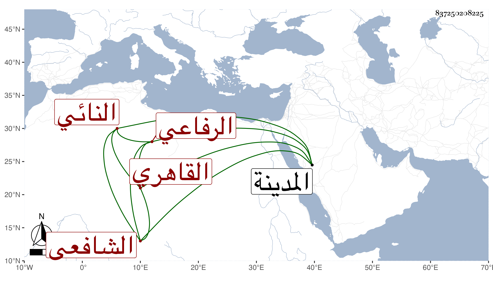

0902Sakhawi.DawLamic.ITO20230111-ara1.EIS1600.837250208225
Biography ID: 837250208225
395
حسن بن حسن بن علي البدر النائي نسبة لناي بالقليوبية القاهري الشافعي الرفاعي ، ولد سنة تسع وأربعين وثمانمائة ، ونشأ يتيما فحفظ القرآن وصلى به بالجمالية ناظر الخاص والمنهاج الفرعي وألفية النحو وجمع الجوامع وكذا منظومة ابن الوردي النحوية في ليلة كما قال وعرض على ابن البلقيني والمناوي والكمال بن إمام الكاملية ثم ترقى للأخذ في الفقه عنهم وعن الفخر المقسي والعبادي بل وقرأ في شرح جمع الجوامع للمحلى على الكمال بن أبي شريف وفي العقليات عن الكافياجي وسيف الدين وقاسم الحنفيين ، وحج غير مرة أولها في سنة تسع وستين وقرأ بالمدينة النبوية على أبي الفرج المراغي أوائل الكتب الستة بحضرة الشهاب الابشيطي وقاضيها الشمس بن القصبي وصحب راجحا وأبا الصفا وآخرين وتلقن من إمام الكاملية ولبس منه الخرقة واختص بشاهين الجمالي وأخيه وغيرهما وحمدوا عقله ودربته وأدبه وسياسته وهو أحد كتاب الزردخانات مع جهات مضافة إليه وهمة علية ، وبلغني انه هو وأخوه محمد من فلاحي ناي وطلبا ليقيما بها فتعصب له المذكوران وأخذا لهم مربعة من الظاهر خشقدم بأعقابهما واستقرا به عريف كتاب الايتام بمدرسة أستاذهما وانه انما حفظ مع القرآن قطعة من المنهاج ولم يشتغل الا علي البدر بن خطيب الفخرية فالله أعلم .
